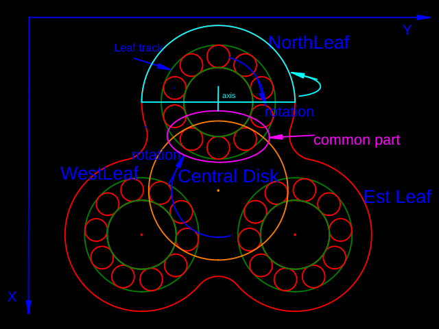
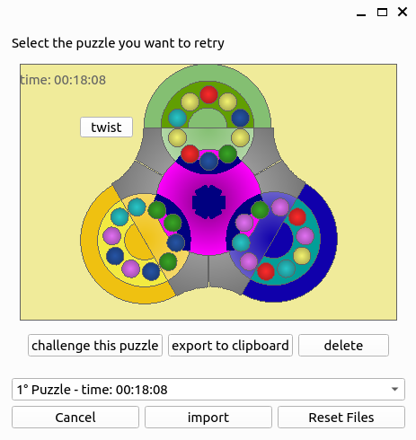

SpinPuzzle is a strategic solitaire game played on a unique board where the objective is to group a set of marbles according to their colors.
Game Objective and Structure
Board
The game is played on a board with a Trefoil shape, utilizing both sides.
The board consists of a central disk (referred to as CentralDisk) and three leaves (NorthLeaf, WestLeaf, and EastLeaf). Refer to the Game Schema for visualization.
{kind=link}

Moves
On this board, players interact with 60 marbles of six different colors (10 marbles per color) distributed evenly across the two sides of the Trefoil.
The marbles are confined to various guides/rails:
- Each leaf contains a circular track where marbles can be moved (green in the Game Schema).
- The CentralDisk can rotate around its axis (orange in the Game Schema).
- Each leaf and the central disk share a common section of the tracks, allowing marbles to be transported between leaves (magenta in the Game Schema).
- The upper part of the leaf can rotate around its x-axis (parallel to the X axis), allowing for mixing marbles from different sides of the Trefoil (cyan in the Game Schema).
QSpinPuzzle
Getting Started
- Launch the executable
QSpinPuzzle.- If using the Python version, execute: ``` python -m qspyn_puzzle ``
**Note:** The Python version is located in theappy` directory. Note: At the moment the python version is not sync with the C++ version.
- If using the Python version, execute: ``` python -m qspyn_puzzle ``
- Press
START. - Attempt to restore the marbles to their original positions, where each leaf contains marbles of only one color.
Upon launching the game, the front Trefoil is displayed.

- You can move marbles using the mouse by dragging them or by using the keyboard:
- Select the component to operate on by pressing:
N: North leafE: East leafW: West leafI: Internal circle
- Rotate the marbles using the arrow keys.
- Check the selected component in the status on the left corner (
*** <active section> ***).
- Select the component to operate on by pressing:
- Press the "twist" button (top left) or the
Pkey to change the active side. - Spin a leaf by pressing the corresponding button on the leaf or selecting the leaf with the keyboard and pressing
PageUporPageDown. - Press
STARTto randomize the marbles with 10,000 random operations. - Use
RESETto reorder the marbles to their original configuration. - Use
SAVEto save your progress - Use
LOADto load the latest progress NOTE: the is no automatic save of the progress!
You can also see your records in solving the puzzle and challenge them back.

Clicking on the button PUZZLE RECORDS on the top left corner you cann access a new dialog:
You will see a list of the fastest 10 puzzle you solved alonge with their time. You can select the puzzle from the combo box: For every puzzle
- You can retry a puzzle to improve your time.
- You can also export it to the clipboard - a string rappresentation of the initial configuration
- You can also delete a puzzle.
In bottom of the Dialog you can also import a game (exported by QSpinPuzzleGame) or delete every records by clicking on Reset Files
Installation
To build this project, you need:
cmake(version 3.5 or higher)- A C++ compiler (C++ standard 17)
- Tested with
g++ (Ubuntu 11.4.0-1ubuntu1~22.04) 11.4.0
- Tested with
ninjato build the corresponding Python packagespyn_puzzle- Optional: Qt library
- If you have Qt libraries, use the argument
-D USE_QT=yeswhen configuring with CMake. - If
cmakecannot find the Qt libraries, manually set the Qt installation directory in theCMakeLists.txtfile.
- If you have Qt libraries, use the argument
pyside6to run the UI with Python:pip install pyside6
For example, this should lunch the game:
Implementation
The implementation is straightforward:
- The UI is a QWidget that paints the Trefoil inside a QWindow.
- The game logic is implemented in
puzzle::SpinPuzzleGame, consisting of two sides ofpuzzle::SpinPuzzleSide. - Only one side is active at a time, and users can manipulate marbles, the internal disk, or spin the leaves using the provided API from
puzzle::SpinPuzzleGame. - Use iterators from
puzzle::SpinPuzzleSideto iterate through the marbles: - For leaves (NORTH, EAST, WEST), circularly iterate through the marbles inside a leaf.
- For
puzzle::LEAF::TREFOIL, the iterator starts from the Trefoil origin and iterates through all the marbles in sequence. - Various operation tests can be found in the
testsdirectory.
Dependencies
- The UI of the application requires Qt (version 6).
- Qt library (Qt6) or
pip install pyside6. - Refer to Qt's open-source LGPL obligations.
- This project is licensed under GPL-3.0.
- To generate coverage results,
gcovandlcovare required:
- Use Doxygen for a comprehensive overview of the implementation.
- To build the Python package,
pybind11is required:
Trubleshooting
Windows
There have been some difficulties to run the applications on Windows. After some attempts, the following seems to work:
- Install WSYS2 along with
gcc,cmakeandninjapacman -S mingw-w64-ucrt-x86_64-gccpacman -S mingw-w64-ucrt-x86_64-cmakepacman -S mingw-w64-ucrt-x86_64-ninja
Add the installation location of
MingW64(most likelyC:\msys64\mingw64\bin) toPATHenviromental variablePYTHONPATHenviromental variable
NOTE: this is needed since on Windows the DLL are no longer searched in
PATHbut have to be explicitly added viaos.add_dll_directorysee The packagepackages/spyn_puzzle/spyn_puzzleis there for this reason: It adds the subpath fromPYTHONPATHtoadd_dll_directory.- run the script
scripts/compile_win.ps1
It should lunch at the very end the QSpinPuzzleGame.
NOTE when you need to decide where to clone the repository in Windows, it might be better to have a short path, since longer path might create problem when compiling, due to the limit of the maximum length of paths
TODOs
- [x] Add a status to check if the game has been solved.
- [x] add a timer
- [x] Change leaf color when spinning a leaf.
- [x] possibility to stop the game, save and load it
- [x] export game to clipboard
- [x] import game (from clipboard)
- [x] delete game from records
- [ ] remove spin button and use mouse or improve them
- [ ] save/load etc. port to python
- [ ] processKey is not sincronized with swap leaf color by spin: fix it! the workaround fails when shuffle is called. [ ] add internal history of commands
References
(1): Trefoil